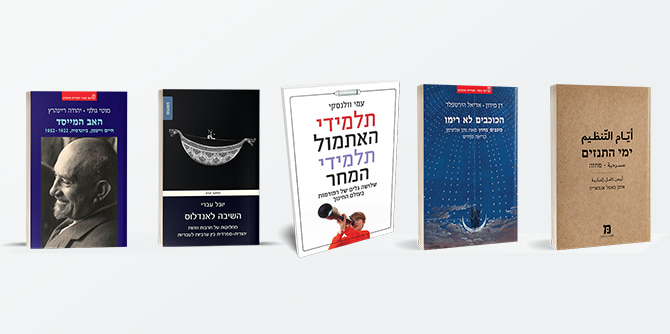
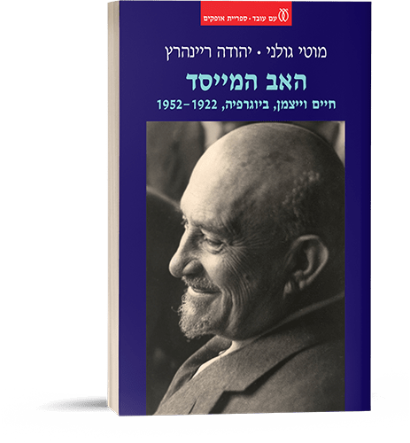

An impressive crop of books written by members of the faculty of the Mandel School for Educational Leadership has recently been published by assorted publishers in Israel:
The Stars Vindicated, a re-reading of Alterman’s poetry by Professor Ariel Hirschfeld and Professor Dan Miron;
The Return to Al-Andalus, by Dr. Yuval Evri;
The Days of the Tanzim, a play by Dr. Ayman Agbaria; and
Students of Yesterday, Students of Tomorrow, a book by Professor Ami Wolansky. In addition, Professor Motti Golani, faculty member of the Mandel School for Educational Leadership, and Mandel Foundation President Professor Jehuda Reinharz authored
The Founding Father: Chaim Weizmann, Biography, 1922–1952.
The Stars Vindicated: Nathan Alterman's "Stars Outside" Re-Viewed
By Dan Miron and Ariel Hirschfeld
Am Oved Publishers
This book contains two re-readings of Nathan Altermans "Stars Outside" poem, one by Professor Dan Miron and the other by Professor Ariel Hirschfeld, and invites the reader to decipher the secret of Altermanian melody. The book calls on us, as did Alterman in his poems, to listen to the music of the world, music whose melody is independent of man but can be responsive to him, if only he opens himself up to its "vital presence."
What is vital presence? In “A Brief Comment on Music and Haste,” which Professor Hirschfeld incorporates in the book as an additional reflection, he writes: “Listening to Alterman's poems or to their lyrical renditions differs from the attention we exercise when listening to ordinary words or events. This is because the "music of the world" is present in these poems, and through them we listen to it… or to the rhythm in every act of life, which generates breathing, hunger, thirst, the movement of walking, sunrise and sunset, and more” (pp. 154–155).
Vital presence, says Professor Hirschfeld, is man’s essence; it is his poetry, found in the power of his emotions and their expression. But more than in words, the real way of joining in with the “music of the world” is “In the Melody of Silence” (the last poem in Alterman's Stars Outside) – that is, in a silence that creates the deep attention necessary for a person to be able to connect to the great melody of creation.
Professor Hirschfeld’s re-reading of the poems in Alterman’s Stars Outside is not merely a literary analysis of Alterman’s poetry. It also provides readers with tools to create a calm inner space that is attentive to the music that they have within themselves and that can be found in the world.
Read the Table of Contents and Introduction (Hebrew) >>
The Return to Al-Andalus: Disputes over Sephardic Culture and Identity between Arabic and Hebrew
By Yuval Evri
Magnes Press
Dr. Yuval Evri’s new book traces contested visions and representations of al-Andalus/Sepharad among modern Jews through a close analysis of the work of Sephardic intellectuals in the Land of Israel/Palestine and their networks at the turn of the twentieth century. Prominent among them were Abraham Shalom Yahuda (1877–1951), Abraham Elmaleh (1885–1967), Yosef Meyouhas (1868–1942), Nissim Malul (1892–1959) and Yitzhak Benyamin Yahuda (1863–1941), who formed part of a growing circle of Sephardi local scholars engaged in a variety of intellectual activities: translation, literary interpretation, journalism, lexicography, philology, and education.
As active members in both Hebrew and Arabic revival movements (Haskalah and Nahda respectively) during the late Ottoman Era, they operated within a range of conflicting political and ideological affinities: they were committed to the emerging national monolingual Jewish project, identified with the Ottoman political reformation and the ethos of the shared homeland, and they emphasized their affiliation with the Arab revival movement and the joint historical legacy of Judeo-Muslim and Judeo-Arabic culture. Furthermore, their work developed in relation and as a reaction to the emergence of the Hebrew and Arabic national cultural movements.
Among themselves and with their European Jewish counterparts, they discussed how to research and represent the cultural heritage of Sepharad on their own terms rather than as part of Jewish cultural visions and political struggles in Europe. They debated how the modern Jewish cultural and national renewal in Palestine should relate to the Arabic language, Arab society, and the Ottoman state, and asked how native Sephardi and Ashkenazi Jews and new European Jewish immigrants should arrange themselves with each other under the British Mandate.
The book explores disputes over Sephardic culture and identity between Arabic and Hebrew, not in order to examine how they were settled, but to understand through them the many manifestations of “Sephardism” and how it has been interpreted in various contexts: in texts, ideas, people, traditions, times, and places. The book also examines the ways in which local Sephardic intellectuals challenged the nationalistic and monolingual separatist ideologies that characterized their times, and proposed an alternative political and cultural route. It looks at their efforts to establish a shared Jewish-Arab society based on a symbolic return to the Sephardi/Andalusian medieval legacy of Hebrew-Arabic bilingualism and a Judeo-Muslim joint cultural heritage.
Dr. Evri illustrates the connection that could have been made by expanding the internal Jewish-Sephardi disputes to include discourse on the “Arab question” via the story of Abraham Shalom Yahuda (the subject of Dr. Evri’s previous research), who was one of the most important Jewish intellectuals born and raised in Jerusalem, but who did not find his place there (this is the focus of the book’s second chapter).
One of the key themes of the book is missed opportunity – a missed opportunity to cultivate better co-existence with the Palestinians, a missed opportunity to create better relations between Israel’s ethnic communities than those that have developed since the establishment of the State of Israel, and more. Dr. Evri does not point a finger of blame at those who might have been responsible for the resulting situation; rather, he recommends re-examining the situation, transcending familiar disciplinary boundaries, and trying to imagine alternative realities.
By exploring these debates and these contested representations of Andalusian identity and culture, the book re-examines some fundamental issues that emerged at the turn of the twentieth century: the national conflict between Jews and Palestinians, the contacts and splits between Hebrew and Arab cultures and the ethnic power relations between Ashkenazim and Mizrahim.
Read the table of contents and introduction (Hebrew) >>
Watch Yuval Evri talking about the book in an Oxford University podcast (English) >>
The Days of the Tanzim
A Play by Ayman Agbaria
Maktoob, The Van Leer Jerusalem Institute
This play by Dr. Ayman Agbaria tells the story of a woman and two men who are connected in different and complicated ways: by family ties, unrequited love, a joint land deal, and as people who were founders of the Tanzim Party several decades earlier. Their memories of the past evoke a longing for a seemingly simpler world. As these memories are interwoven with contemporary reality, we become aware of the tension that exists between the three friends, which stems from what each remembers, how the memories are related to their dreams, and how the memories affect the role that each friend expects and is expected to play in the lives of the others.
Dr. Agbaria does not allow the characters he created to bask in the sweetness of their shared and “simple” memories. Clinging to old memories cannot provide fertile ground for the development of new realities that can correct the damage done to each of the characters, and within Palestinian society as a whole. “Who can photograph your heart, your memory, and your dreams?” argues Younes, challenging Musa, his longtime friend and admirer, who is deeply immersed in the political intrigues and power games of his run for mayor.
The complicated Palestinian reality requires a different view, for, as Younes says: “Now, the situation is different. Things are mixed up – truth is confused with lies, treason with nationalism, faith with heresy. I know nothing anymore. I no longer know you nor myself” (p. 27).
Nevertheless, this is not a story of total identity loss. Faced with the disillusionment and despair that stems from the recognition that the three friends do not have a common future, the characters quote verses from the Koran and the Hadiths throughout the play, and incorporate folk tales and works from past and contemporary Muslim and Palestinian culture (including a play within the play).
The common past and shared culture of the friends are present despite a sense of disintegration. The friends are all victims of their principles, conclude the two friends who remain at the end of the play, after the death of the third. The conclusion that "we are all victims" conveys a moral of a traditional kind: “Al-Khira fima ach’tarahu Allah – everything is for the best.” Despite this conclusion, the play does not have a totalistic or fatalistic worldview. “Everything is for the best” is also the moral of a story told by the two friends at the start of the play – a parable in which the subject of the comparison remains open. Repeating this moral at the end of the play raises a question and perhaps a call to action: Will the friends re-examine the parable and interpret it?
The play was published in an Arabic-Hebrew edition by the Van Leer Institute’s Maktoob imprint. It has been performed by the Jaffa Theatre in a production starring Makram Khoury, Rauda Suleiman, and Yosef Abu Varda (who also directs).
Read the play in Hebrew and Arabic >>
Students of Yesterday, Students of Tomorrow: Three Waves of Reform in the World of Education
By Ami Volansky
Schocken Books
Professor Ami Volansky proposes seeing the inherent gap between expectations from education systems (both in Israel and the world) and the ability to fulfill them, as the explanation for the constant search for changes in educational methods. This reading refrains from passing judgment on the factors that cause the gap between expectations and a reality that can never be fully predicted, but does not despair of overcoming this gap. In his review, Professor Volansky seeks to shed light on the conceptions behind various reforms and examines whether the considerations applied by those who planned and implemented reforms in the education system indeed reflect these conceptions.
The answer to this question can explain the success or failure of the various reforms discussed in this book. For example, in describing the background of the third and current wave of educational reforms, which focus on meaningful learning, Professor Volansky refers to the symbiosis between the world of youth and technology in the education system and the many efforts that have been made in order to promote technology in education since the 1970s, and today more than ever (pp. 142–137, Vol. II).
Professor Volansky’s description of the systemic behavior is fairly consistent. A need is identified (e.g., access to knowledge outside the classroom and school, students at the center of knowledge production, adaptation to the constructivist approach, peer learning, self-study, etc.). Next, a budget is allocated and a direct response is provided (e.g., computers are purchased for classrooms). Following this, a (not surprising) gap is revealed between the “solution” and the ability to make intelligent educational use of it. It then emerges that the need has not been met, and a committee is set up (e.g., the 1990 Harari Committee) and is tasked with recommending solutions to improve the response and properly implement it within the education system. Consequently, there is vibrant educational activity, and many research initiatives are launched.
However, Professor Volansky asks, has the educational goal of meaningful learning been achieved? In the case of incorporating new technology into the education system, were the appropriate “big” questions asked, such as: “Has the teaching and learning culture of the education system changed? Has traditional teaching culture changed? Is learning more active today? Is the learner more independent? Do teachers benefit from greater autonomy?" As this example shows, these questions are always relevant.
Watch the Tel Aviv University conference that marked the book’s publication (Hebrew) >>

The Founding Father: Chaim Weizmann, Biography, 1922–1952
By Motti Golani and Jehuda Reinharz
Am Oved Publishing
Theodore Herzl was the visionary who foresaw the State of Israel. No one disputes that. But the state also had a founding father, Chaim Weizmann, whose name has been forgotten, and whose crown was placed on the head of another: David Ben-Gurion. Had it not been for Chaim Weizmann, Herzl might have been remembered only as a journalist and playwright, and Ben-Gurion would never have become “Ben-Gurion.”
Weizmann, who turned the vision of the State of Israel into a reality, was a man of contradictions. He had mesmerizing charisma but low self-confidence. He was a wonderful conversationalist but a poor public speaker. He was alienated from Eastern European Jewry but willing to give his life for it. He was a people person and a ladies' man, but was always Vera’s partner, for better or worse. He was a hypochondriac who also knew real sickness. He was British to the core and at the same time was an uncompromising Zionist. And, in particular, he was a man who struggled to live in the land in which the country of his dreams had been established.
Weizmann showed that the most effective action for the Zionist enterprise would best be carried out in London or New York, rather than in Jerusalem. After sacrificing his scientific career, his family, and his health for the most important matter in his life, Weizmann came to the State of Israel in body, but perhaps not in soul. The Israeli collective memory never forgave him and remembers him as the first, but powerless, president. This book by Professor Motti Golani, faculty member of the Mandel School for Educational Leadership, and Professor Jehuda Reinharz, President of the Jack, Joseph and Morton Mandel Foundation, reveals Weizmann in all his human complexity.
Read the foreword on the e-vrit website (Hebrew) >>
{kind=link}
{kind=link}
{kind=link}
{kind=link}
{kind=link}
{kind=link}